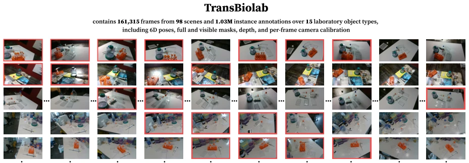
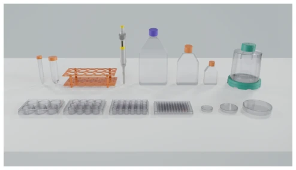
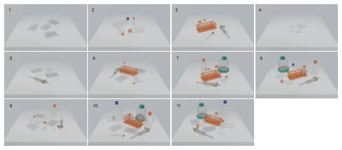
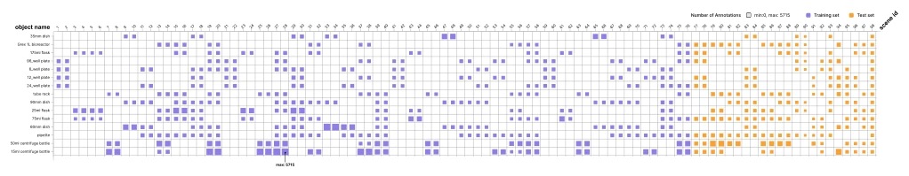
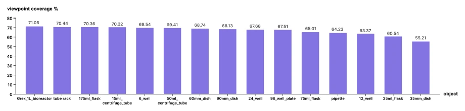
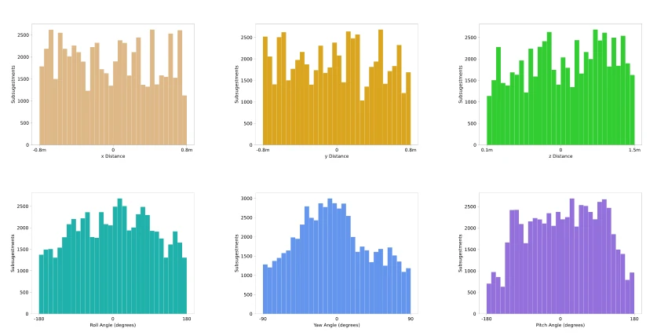

终于有人把透明塑料ware从“桌面玩具”拉回“真实实验室”了。TransBiolab 填补了生物医学场景下透明物体多视图、高遮挡数据的空白。但别高兴太早，现有 Foundation 模型在这上面依然掉链子，SAM 3 在复杂遮挡下 mIoU 直接跳水，深度估计更是灾难。这数据集与其说是 benchmark，不如说是给现有模型的一记“耳光”，证明它们在真实生物实验室里还没学会“透视”。不过，多视图序列和校准数据确实为多模态推理提供了新玩具，只是标注成本估计让后来人头秃。
Finally, someone has pulled transparent plastic ware back from "desktop toys" to "real laboratories". TransBiolab fills the gap in multi-view, high-occlusion data for transparent objects in biomedical scenarios. But don't get too excited; existing Foundation models still fall short here, with SAM 3's mIoU plummeting under complex occlusion, and depth estimation being a disaster. This dataset is less of a benchmark and more of a "slap in the face" to existing models, proving they haven't learned to "see through" in real biological laboratories. However, the multi-view sequences and calibration data do provide new toys for multimodal reasoning, though the estimated annotation cost gives future researchers a headache.
Autonomous biological labs are shifting from fixed units to perception-driven manipulation, but visual perception of transparent plastic consumables (petri dishes, centrifuge tubes, etc.) remains a pain point. Existing datasets like LINEMOD and YCB focus on opaque objects [2, 13], while KeyPose, ClearPose, etc., although involving transparent objects, mostly focus on desktop or chemical glass, lacking repeated instances, high occlusion, and calibrated multi-view sequences specific to biomedical scenarios [6, 19]. This leads to models struggling to distinguish geometrically similar objects and being unable to cope with background interference and lighting variations in real laboratories. Without such data, researchers cannot determine whether model failure stems from class ambiguity or occlusion, hindering the deployment of end-to-end operating systems.

Figure 1: An overview of the proposed TransBiolab dataset, featuring multi-object and multi-view characteristics. Frames denoted by red rectangles indicate higher levels of clutter and occlusion.

Figure 2: Rendering views of the 15 objects included in TransBiolab, covering well plates, Petri dishes, centrifuge tubes, pipettes, tube racks, culture flasks, reagent bottles, and a bioreactor.
The overall process is divided into data collection, annotation, and benchmarking. Collection uses a Franka Panda equipped with RealSense D435i for multi-view sequence recording, covering 98 scenes and including 11 placement patterns reflecting lab SOPs. Annotation adopts a sequence-centric multi-view process, using ORB-SLAM3 to estimate trajectories, KinectFusion to fuse depth, and aligning 3D meshes via RGB reprojection and point cloud consistency in Blender to generate 6D poses, masks, and depth; geometric consistency audits show projected IoU reaches 0.949. Additionally, 10 real laboratory scenes are introduced as held-out tests. Benchmarking covers segmentation, depth completion, and 6D pose, and includes real robot grasping evaluation, ensuring data is used not only for offline training but also to verify system-level manipulation capabilities, supporting video and multi-view methods to solve transparent object occlusion problems.

Figure 4: Eleven arrangement patterns used to build con- trolled scenes with increasing clutter, repeated instances, and cross-category interaction.

Figure 6: Scene-object distribution matrix and initial scene-disjoint training/test partition.
Baselines such as SAM 3 and FoundationPose were tested on 161k frames of data. In the segmentation task, SAM 3's mIoU dropped to 0.685 under complex occlusion, while TransLab performed even worse. Regarding depth estimation, DA3 and ClearGrasp showed significantly higher errors on TransBiolab than ClearPose, indicating that transparent object depth recovery remains a challenge. In 6D pose estimation, FoundationPose's ADD-S AUC dropped from ClearPose's 91.05 to 80.80, with high rotation uncertainty for symmetric objects (such as test tube racks). In real robot experiments, the parallel gripper success rate was 65.3%, dropping to 56.67% for the dexterous hand, proving that perception errors and grasping strategies jointly affect final performance.

Figure 7: Object-wise viewpoint coverage across the calibrated multi-view sequences.

Figure 8: Distributions of released 6D annotations over translation and rotation axes.